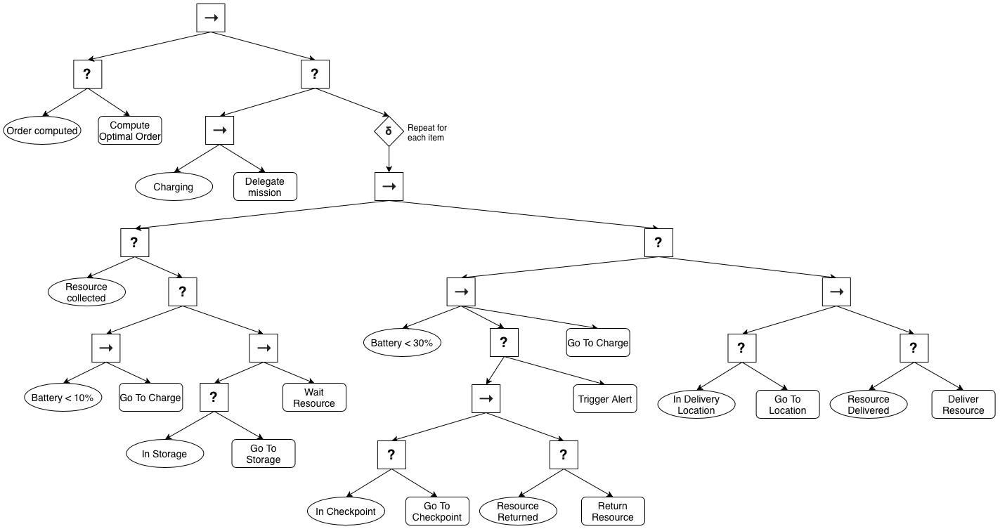
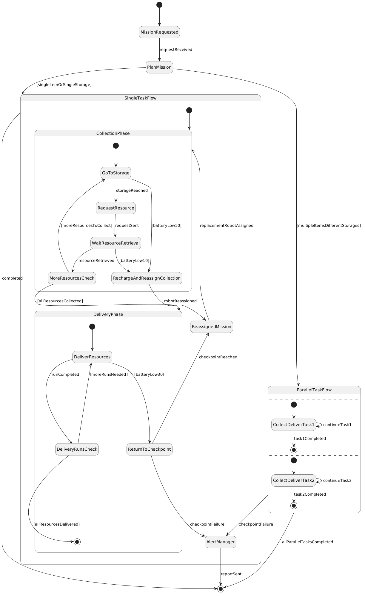
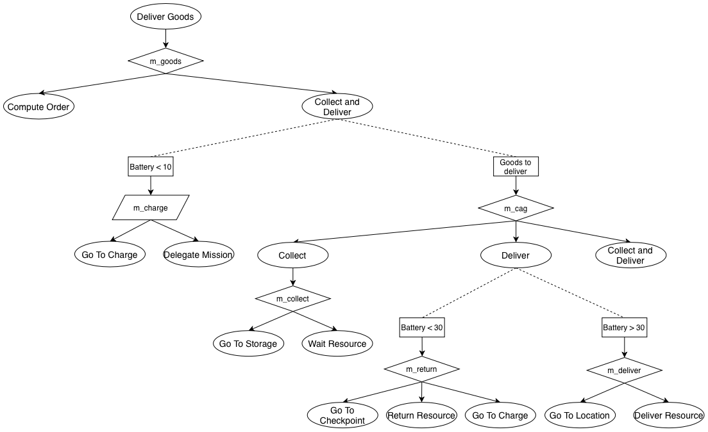
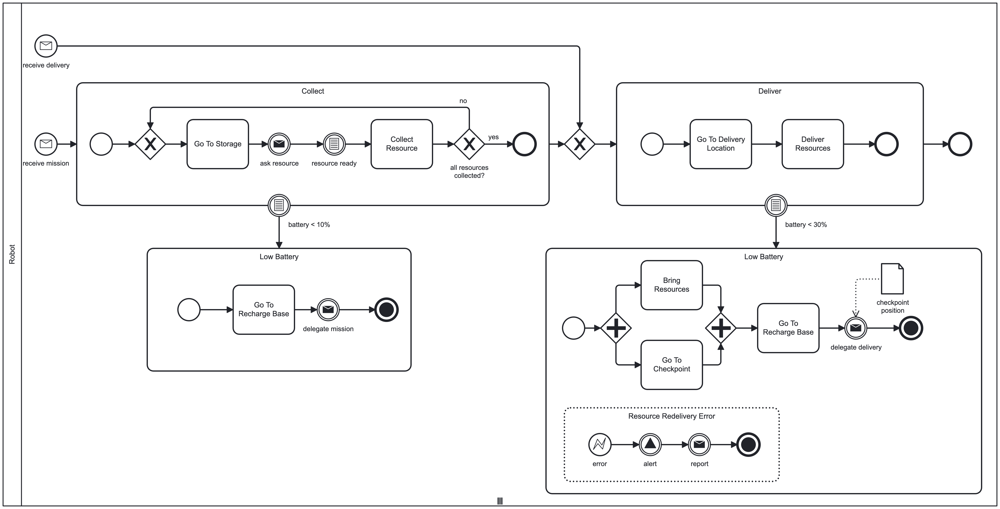

When required, a robot must collect the required resources in the storage and deliver them to the requesting agent in a specified location. In the collection phase, the robot must go to the storage places where the resources can be found. The order to be followed is defined by the estimation of waiting time summed up with the path to be run by the robot. Once the robot reaches one storage and it is time to request the resource, the robot sends a message to the storage with the precise specification of the requested resources and waits until the resources have been retrieved. Once retrieved, the delivery phase begins. In this phase, the robot will make as many runs as necessary to take all the resources to the specified location. If the battery of the assigned robot runs low (10%) in the collection phase, the robot goes back to the recharging station and assigns the mission to another robot. If the battery of the assigned robot runs low (30%) in the delivery phase, the robot must return the resource to a checkpoint and assign the remaining task to another robot, which will know where the resource is positioned. In case of failure to return the resource to a checkpoint, an alert must be triggered and the report sent to the sector manager. When multiple items are required from different storages, multiple robots can be assigned to parallel collect-deliver tasks to reduce the time to finish the mission.
Askarpour, Mehrnoosh, et al. Robomax: Robotic mission adaptation exemplars. 2021 International Symposium on Software Engineering for Adaptive and Self-Managing Systems (SEAMS). IEEE, 2021.



